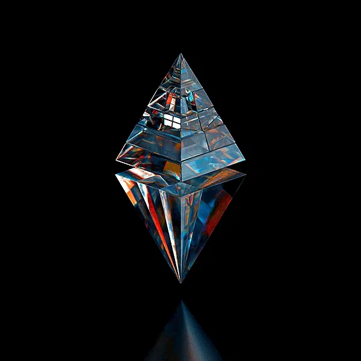

The Digital Age
An exhibition on the future of currency

Welcome to our interactive guide to blockchains, cryptocurrencies, and
NFTs. Whether you're a newcomer looking to dip your toes in the world of
decentralized finance or an experienced investor seeking to deepen your
knowledge, our platform will serve as your ultimate resource. So dive
right in!
Blockchain
What's the chain all about?
A blockchain is like a super-secure digital ledger that records
transactions across multiple computers, making it nearly impossible to
hack or cheat the system. Imagine it as a chain of blocks, where each
block contains data about a transaction (like a payment or a contract).
Once a block is added to the chain, it's virtually set in stone, and
everyone in the network has a copy of the entire chain.
The cryptographic cipher
To ensure the security of this digital ledger, blockchain uses
cryptography – a fancy word for secret codes. Each block has a unique code
called a "hash" that acts like a fingerprint. If someone tries to tamper
with a block, the hash changes, and the entire network knows something's
fishy.
Decentralized decisions
Unlike traditional databases managed by a single authority, a blockchain
is decentralized, meaning the network is spread across multiple computers
(called nodes). These nodes constantly verify and update the blockchain,
making it nearly impossible for anyone to gain control over the system.
Mining maestros
But how do new transactions get added to the blockchain? Enter the miners!
These are powerful computers that solve complex mathematical puzzles to
verify and add new blocks to the chain. As a reward for their hard work,
miners get a small amount of cryptocurrency (like Bitcoin or Ethereum).
The cryptocurrency craze
Speaking of cryptocurrency, blockchain is the backbone of these digital
currencies. Instead of relying on banks or governments, cryptocurrencies
use blockchain to record and verify transactions securely and
transparently.
Crypto
Digital dollars
Imagine a world where money exists only in the digital realm, without any
physical coins or notes. That's the idea behind cryptocurrency – a form of
digital cash that allows secure online transactions without the need for a
middleman like a bank.

A decentralized democracy
Unlike traditional currencies controlled by governments or banks,
cryptocurrencies are decentralized – meaning they operate on a
peer-to-peer network without a central authority. This democratizes the
system, putting the power back in the hands of the people.
The wallet watchdog
To store and manage your cryptocurrency, you'll need a digital wallet – a
secure software program that holds your private keys (like super-secret
passwords) and allows you to send and receive tokens. But remember, lose
your keys, and your crypto could be lost forever!
NFT
Unique as a unicorn
In the world of cryptocurrencies and fungible tokens (like Bitcoin or
Ethereum), each token is interchangeable – one BTC is worth the same as
any other BTC. But NFTs are different – they're unique, one-of-a-kind
digital assets that can represent anything from art to music, videos, or
even tweets!

The bedrock
Just like cryptocurrencies, NFTs are built on blockchain technology, which
acts as a secure and transparent ledger for recording ownership and
transactions. But instead of being interchangeable, each NFT has its own
unique digital signature, making it verifiable and immutable.
Art of authenticity
One of the most popular use cases for NFTs is in the world of digital art.
By minting their artwork as an NFT, artists can create scarcity,
authenticate their work, and receive royalties every time their NFT is
sold or traded. The following graphs shows the most common NFT portals in
the world. Data is presented by volume as well as monetary value.
NFTs are a great way for digital artists to express their artwork. Infact,
it's a great way for artists to monetize their artwork. The following
digital museum showcases some amazing NFT collections. Feel free to
explore!
Ending notes
Blockchain, cryptocurrencies, and NFTs represent a digital revolution,
challenging traditional systems of ownership, value exchange, and trust.
These decentralized technologies are democratizing access, empowering
individuals, and introducing concepts like digital scarcity and unique
asset ownership. As the world becomes increasingly digital, their
importance will only grow, reshaping how we perceive and interact with
currencies, assets, and authenticity. Embrace this revolution, for it's
not just about technology but reimagining our relationship with the
digital world.